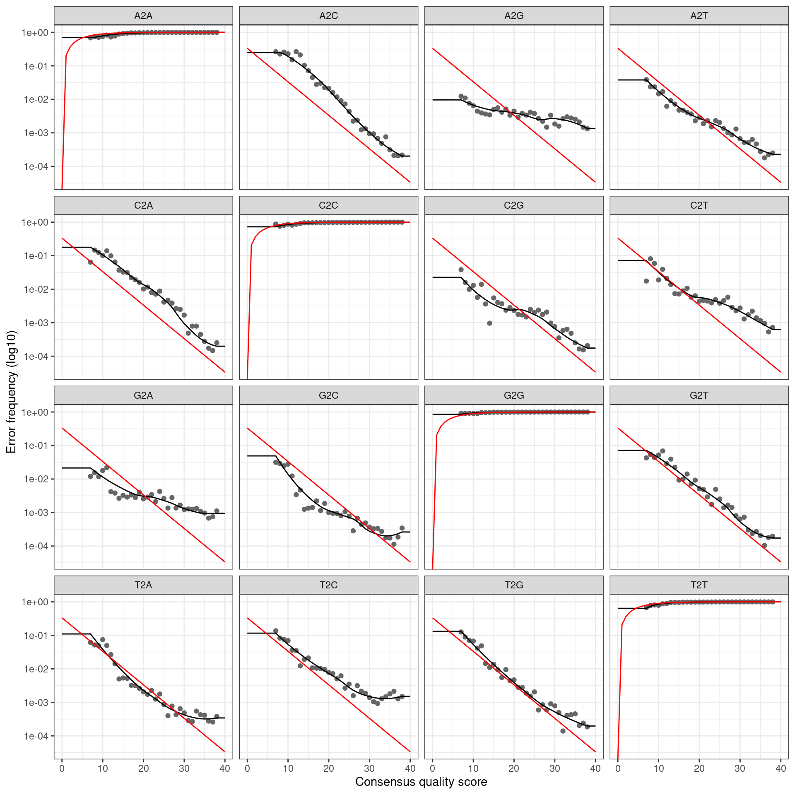

Abundance matrix and taxonomic assignment
This is an analysis of the data from the MiSeq run testing the rps10 barcode and associated primers. Multiple mock community samples and environmental samples were sequenced. This will roughly follow the DADA2 ITS Pipeline Workflow (1.8) and the DADA2 Pipeline Tutorial (1.12).
Prepare
Notes on how to use this analysis
Some of the long running operations that produce output files only run if their output does not exist. To rerun them, delete the corresponding file in the intermediate data folder.
Packages used
library(dada2)
library(ShortRead)
library(Biostrings)
library(dplyr)
library(purrr)
library(furrr)
library(tidyr)
library(readr)
library(ggplot2)
library(gridExtra)
library(sessioninfo)
library(Biostrings)
library(stringr)
library(metacoder)Parameters
seed <- 9999
set.seed(seed)
min_read_merging_overlap <- 15 # Default is 12
max_read_merging_mismatch <- 2 # Default is 0
remove_chimeras <- TRUE # Default is TRUE
min_asv_length <- 50
its_clustering_threshold <- 0.99
rps10_clustering_threshold <- 0.96Parallel processing
Commands that have “future” in them are run on multiple cores using the furrr and future packages.
plan(multiprocess)## Warning: [ONE-TIME WARNING] Forked processing ('multicore') is disabled
## in future (>= 1.13.0) when running R from RStudio, because it is
## considered unstable. Because of this, plan("multicore") will fall
## back to plan("sequential"), and plan("multiprocess") will fall back to
## plan("multisession") - not plan("multicore") as in the past. For more details,
## how to control forked processing or not, and how to silence this warning in
## future R sessions, see ?future::supportsMulticoreLearn the Error Rates
Error rates of incorrect base calls during sequencing must be estimated to do ASV calling. This process will estimate those error rates from the data. First I will load the data for the fastq files for each sample that was generated previously.
fastq_data <- read_csv(file.path("intermediate_data", "fastq_data.csv"))##
## ── Column specification ────────────────────────────────────────────────────────
## cols(
## file_id = col_character(),
## sample_id = col_character(),
## direction = col_character(),
## raw_path = col_character(),
## prefiltered_path = col_character(),
## trimmed_path = col_character(),
## untrimmed_path = col_character(),
## filtered_path = col_character()
## )and join this with the sample metadata so that I can distinguish rps10 from ITS1 samples.
metadata <- read_csv(file.path('intermediate_data', 'metadata.csv'))##
## ── Column specification ────────────────────────────────────────────────────────
## cols(
## sample_id = col_character(),
## primer_pair_id = col_character(),
## dna_type = col_character(),
## dna_sample_id = col_character(),
## locus = col_character(),
## forward = col_character(),
## reverse = col_character(),
## sample_type = col_character()
## )fastq_data <- metadata %>%
select(sample_id, locus, primer_pair_id) %>%
right_join(fastq_data, by = "sample_id") %>%
mutate(file_name = paste0(file_id, '.fastq.gz'))
print(fastq_data)## # A tibble: 96 x 11
## sample_id locus primer_pair_id file_id direction raw_path prefiltered_path
## <chr> <chr> <chr> <chr> <chr> <chr> <chr>
## 1 A1 rps10 rps10_Final A1_R1 Forward raw_dat… intermediate_da…
## 2 A1 rps10 rps10_Final A1_R2 Reverse raw_dat… intermediate_da…
## 3 A2 rps10 rps10_Final A2_R1 Forward raw_dat… intermediate_da…
## 4 A2 rps10 rps10_Final A2_R2 Reverse raw_dat… intermediate_da…
## 5 A3 rps10 rps10_Felipe A3_R1 Forward raw_dat… intermediate_da…
## 6 A3 rps10 rps10_Felipe A3_R2 Reverse raw_dat… intermediate_da…
## 7 A4 rps10 rps10_Felipe A4_R1 Forward raw_dat… intermediate_da…
## 8 A4 rps10 rps10_Felipe A4_R2 Reverse raw_dat… intermediate_da…
## 9 A5 ITS ITS6/7 A5_R1 Forward raw_dat… intermediate_da…
## 10 A5 ITS ITS6/7 A5_R2 Reverse raw_dat… intermediate_da…
## # … with 86 more rows, and 4 more variables: trimmed_path <chr>,
## # untrimmed_path <chr>, filtered_path <chr>, file_name <chr>To simplify the following code, I will make a function to get the fastq file paths for a particular combination of primer pair and read direction.
get_fastq_paths <- function(my_direction, my_primer_pair_id) {
fastq_data %>%
filter(direction == my_direction, primer_pair_id == my_primer_pair_id, file.exists(filtered_path)) %>%
pull(filtered_path)
}Next, I will make a function to infer the error profile (for each type of nucleotide mutation) for each a given read direction (forward/reverse) and primer pair, and use that information to infer ASVs using dada2.
infer_asvs <- function(my_direction, my_primer_pair_id, plot_error_rates = TRUE) {
# Get relevant FASTQ files
fastq_paths <- get_fastq_paths(my_direction, my_primer_pair_id)
# Infer error rates for each type of nucleotide mutation
error_profile <- learnErrors(fastq_paths, multithread = TRUE)
# Plot error rates
if (plot_error_rates) {
cat(paste0('Error rate plot for the ', my_direction, ' read of primer pair ', my_primer_pair_id, ' \n'))
print(plotErrors(error_profile, nominalQ = TRUE))
}
# Infer ASVs
asv_data <- dada(fastq_paths, err = error_profile, multithread = TRUE)
return(asv_data)
}Now I can infer the ASVs for each sample, with different error profiles for each combination of read direction and primer pair.
This will take a while.
denoised_data_path <- file.path("intermediate_data", "denoised_data.Rdata")
if (file.exists(denoised_data_path)) {
load(denoised_data_path)
} else {
run_dada <- function(direction) {
lapply(unique(fastq_data$primer_pair_id), function(primer_pair_id) infer_asvs(direction, primer_pair_id)) %>%
unlist(recursive = FALSE)
}
dada_forward <- run_dada("Forward")
dada_reverse <- run_dada("Reverse")
save(dada_forward, dada_reverse, file = denoised_data_path)
}## 111854287 total bases in 398029 reads from 1 samples will be used for learning the error rates.
## Error rate plot for the Forward read of primer pair rps10_Final## Warning: Transformation introduced infinite values in continuous y-axis## Sample 1 - 398029 reads in 91057 unique sequences.
## Sample 2 - 7728 reads in 3409 unique sequences.
## Sample 3 - 498193 reads in 167283 unique sequences.
## Sample 4 - 28152 reads in 16116 unique sequences.
## Sample 5 - 295536 reads in 80471 unique sequences.
## Sample 6 - 28340 reads in 15177 unique sequences.
## Sample 7 - 232302 reads in 84893 unique sequences.
## Sample 8 - 47482 reads in 24754 unique sequences.
## Sample 9 - 460310 reads in 126303 unique sequences.
## Sample 10 - 30339 reads in 18348 unique sequences.
## Sample 11 - 553096 reads in 133557 unique sequences.
## Sample 12 - 30220 reads in 13806 unique sequences.
## Sample 13 - 135125 reads in 65992 unique sequences.
## Sample 14 - 41128 reads in 19192 unique sequences.
## Sample 15 - 107774 reads in 83365 unique sequences.
## 171161268 total bases in 606995 reads from 1 samples will be used for learning the error rates.
## Error rate plot for the Forward read of primer pair rps10_Felipe## Warning: Transformation introduced infinite values in continuous y-axis## Sample 1 - 606995 reads in 192125 unique sequences.
## Sample 2 - 74275 reads in 16169 unique sequences.
## Sample 3 - 737779 reads in 222168 unique sequences.
## Sample 4 - 54970 reads in 21080 unique sequences.
## Sample 5 - 279748 reads in 77262 unique sequences.
## Sample 6 - 43762 reads in 19228 unique sequences.
## Sample 7 - 364288 reads in 124906 unique sequences.
## Sample 8 - 68014 reads in 27565 unique sequences.
## Sample 9 - 600878 reads in 151052 unique sequences.
## Sample 10 - 57295 reads in 21704 unique sequences.
## Sample 11 - 729071 reads in 244504 unique sequences.
## Sample 12 - 63777 reads in 27830 unique sequences.
## Sample 13 - 115084 reads in 54507 unique sequences.
## Sample 14 - 92136 reads in 35475 unique sequences.
## Sample 15 - 145193 reads in 39886 unique sequences.
## Sample 16 - 273 reads in 242 unique sequences.
## 102059660 total bases in 395228 reads from 1 samples will be used for learning the error rates.
## Error rate plot for the Forward read of primer pair ITS6/7## Warning: Transformation introduced infinite values in continuous y-axis## Sample 1 - 395228 reads in 65083 unique sequences.
## Sample 2 - 48295 reads in 14153 unique sequences.
## Sample 3 - 386983 reads in 64521 unique sequences.
## Sample 4 - 320680 reads in 83377 unique sequences.
## Sample 5 - 120162 reads in 37292 unique sequences.
## Sample 6 - 290916 reads in 85737 unique sequences.
## Sample 7 - 394643 reads in 85438 unique sequences.
## Sample 8 - 187827 reads in 43382 unique sequences.
## Sample 9 - 573625 reads in 116363 unique sequences.
## Sample 10 - 447258 reads in 136129 unique sequences.
## Sample 11 - 536425 reads in 86863 unique sequences.
## Sample 12 - 455345 reads in 138292 unique sequences.
## Sample 13 - 185410 reads in 46514 unique sequences.
## Sample 14 - 594308 reads in 154614 unique sequences.
## Sample 15 - 20730 reads in 5090 unique sequences.
## Sample 16 - 288548 reads in 73307 unique sequences.
## 111441028 total bases in 398029 reads from 1 samples will be used for learning the error rates.
## Error rate plot for the Reverse read of primer pair rps10_Final## Warning: Transformation introduced infinite values in continuous y-axis## Sample 1 - 398029 reads in 152628 unique sequences.
## Sample 2 - 7728 reads in 4292 unique sequences.
## Sample 3 - 498193 reads in 222788 unique sequences.
## Sample 4 - 28152 reads in 15641 unique sequences.
## Sample 5 - 295536 reads in 104357 unique sequences.
## Sample 6 - 28340 reads in 15736 unique sequences.
## Sample 7 - 232302 reads in 100639 unique sequences.
## Sample 8 - 47482 reads in 25504 unique sequences.
## Sample 9 - 460310 reads in 158163 unique sequences.
## Sample 10 - 30339 reads in 18604 unique sequences.
## Sample 11 - 553096 reads in 173505 unique sequences.
## Sample 12 - 30220 reads in 20289 unique sequences.
## Sample 13 - 135125 reads in 65807 unique sequences.
## Sample 14 - 41128 reads in 26465 unique sequences.
## Sample 15 - 107774 reads in 60381 unique sequences.
## 169953582 total bases in 606995 reads from 1 samples will be used for learning the error rates.
## Error rate plot for the Reverse read of primer pair rps10_Felipe## Warning: Transformation introduced infinite values in continuous y-axis## Sample 1 - 606995 reads in 268925 unique sequences.
## Sample 2 - 74275 reads in 19208 unique sequences.
## Sample 3 - 737779 reads in 317309 unique sequences.
## Sample 4 - 54970 reads in 25721 unique sequences.
## Sample 5 - 279748 reads in 106764 unique sequences.
## Sample 6 - 43762 reads in 22069 unique sequences.
## Sample 7 - 364288 reads in 148840 unique sequences.
## Sample 8 - 68014 reads in 31442 unique sequences.
## Sample 9 - 600878 reads in 203331 unique sequences.
## Sample 10 - 57295 reads in 33463 unique sequences.
## Sample 11 - 729071 reads in 256841 unique sequences.
## Sample 12 - 63777 reads in 37916 unique sequences.
## Sample 13 - 115084 reads in 58951 unique sequences.
## Sample 14 - 92136 reads in 49192 unique sequences.
## Sample 15 - 145193 reads in 41835 unique sequences.
## Sample 16 - 273 reads in 252 unique sequences.
## 102260557 total bases in 395228 reads from 1 samples will be used for learning the error rates.
## Error rate plot for the Reverse read of primer pair ITS6/7## Warning: Transformation introduced infinite values in continuous y-axis
## Sample 1 - 395228 reads in 109035 unique sequences.
## Sample 2 - 48295 reads in 23241 unique sequences.
## Sample 3 - 386983 reads in 110404 unique sequences.
## Sample 4 - 320680 reads in 107845 unique sequences.
## Sample 5 - 120162 reads in 55204 unique sequences.
## Sample 6 - 290916 reads in 119691 unique sequences.
## Sample 7 - 394643 reads in 108999 unique sequences.
## Sample 8 - 187827 reads in 58944 unique sequences.
## Sample 9 - 573625 reads in 152927 unique sequences.
## Sample 10 - 447258 reads in 194390 unique sequences.
## Sample 11 - 536425 reads in 113914 unique sequences.
## Sample 12 - 455345 reads in 211397 unique sequences.
## Sample 13 - 185410 reads in 61984 unique sequences.
## Sample 14 - 594308 reads in 212644 unique sequences.
## Sample 15 - 20730 reads in 10251 unique sequences.
## Sample 16 - 288548 reads in 112963 unique sequences.Merge paired reads
This will combine the forward and reverse reads into a single read based on overlaps.
merged_read_data_path <- file.path('intermediate_data', 'merged_reads.rds')
if (file.exists(merged_read_data_path)) {
merged_reads <- readRDS(merged_read_data_path)
} else {
merged_reads <- mergePairs(dadaF = dada_forward,
derepF = file.path('intermediate_data', 'filtered_sequences', names(dada_forward)),
dadaR = dada_reverse,
derepR = file.path('intermediate_data', 'filtered_sequences', names(dada_reverse)),
minOverlap = min_read_merging_overlap,
maxMismatch = max_read_merging_mismatch,
returnRejects = TRUE,
verbose = TRUE)
saveRDS(merged_reads, file = merged_read_data_path)
}I will plot the amount of overlap and percent identity in the overlap region to get an idea of how each locus is getting merged. First I will combine all the read merging output into a single table with a new column for which sample it came from:
non_empty_merged_reads <- merged_reads[map_dbl(merged_reads, nrow) > 0]
merge_data <- non_empty_merged_reads %>%
bind_rows() %>%
mutate(file_name = rep(names(non_empty_merged_reads), map_int(non_empty_merged_reads, nrow)),
sample_id = gsub(file_name, pattern = '_.+$', replacement = '')) %>%
as_tibble()Next I will add columns for the metadata so I can tell which samples are for each locus
metadata <- read_csv(file.path('intermediate_data', 'metadata.csv'))##
## ── Column specification ────────────────────────────────────────────────────────
## cols(
## sample_id = col_character(),
## primer_pair_id = col_character(),
## dna_type = col_character(),
## dna_sample_id = col_character(),
## locus = col_character(),
## forward = col_character(),
## reverse = col_character(),
## sample_type = col_character()
## )merge_data <- left_join(merge_data, metadata, by = 'sample_id')and remove any unneeded columns
merge_data <- select(merge_data, locus, nmatch, nmismatch, nindel, accept)
merge_data## # A tibble: 96,858 x 5
## locus nmatch nmismatch nindel accept
## <chr> <int> <int> <int> <lgl>
## 1 rps10 117 0 0 TRUE
## 2 rps10 116 0 1 TRUE
## 3 rps10 120 0 1 TRUE
## 4 rps10 120 0 0 TRUE
## 5 rps10 126 0 0 TRUE
## 6 rps10 117 0 0 TRUE
## 7 rps10 135 0 0 TRUE
## 8 rps10 129 0 0 TRUE
## 9 rps10 117 0 1 TRUE
## 10 rps10 120 0 1 TRUE
## # … with 96,848 more rowsI will add new columns for overlap length and percent ID:
merge_data <- mutate(merge_data,
overlap = nmatch + nmismatch,
mismatch = nmismatch + nindel,
identity = (overlap - mismatch) / overlap)and now I can reformat the data for plotting and plot
merge_plot <- merge_data %>%
select(locus, mismatch, accept, overlap) %>%
rename('Locus' = locus, 'Mismatches and Indels' = mismatch, 'Merged' = accept, 'Overlap Length' = overlap) %>%
gather(key = 'stat', value = 'value', -Locus, -Merged) %>%
ggplot(aes(x = value, fill = Merged)) +
facet_grid(Locus ~ stat, scales = 'free') +
geom_histogram(bins = 30) +
scale_fill_viridis_d(begin = 0.8, end = 0.2) +
labs(x = '', y = 'ASV count', fill = 'Merged') +
theme(panel.grid.major.x = element_blank(),
panel.grid.minor = element_blank(),
legend.position="bottom")
ggsave(merge_plot, filename = 'read_merging.png', path = 'results', width = 8, height = 8)
merge_plotCreate ASV abundance matrix
This will create the long-sought-after abundance matrix (ASV table).
raw_abundance_data <- map(merged_reads, function(x) filter(x, accept == TRUE)) %>%
makeSequenceTable()
hist(nchar(getSequences(raw_abundance_data)))Create OTU abundance matrix
I will also create an OTU abundance matrix so I can evaluate the two methods with an OTU-based approch. Clustering is a greedy algorithm with sequences presorted by abundance and automatically masked for low-complexity regions.
vserach_cluster <- function(seqs, seq_abund, id_threshold = 0.97, method = "fast") {
# Check that VSEARCH is installed
tryCatch(system2("vsearch", args = "--version", stdout = FALSE, stderr = FALSE),
warning=function(w) {
stop("vsearch cannot be found on PATH. Is it installed?")
})
# Run VSEARCH
# seqs <- seqs[order(seq_abund, decreasing = TRUE)]
input_fasta_path <- tempfile()
write_lines(paste0('>', seq_along(seqs), ';size=', seq_abund, '\n', seqs), path = input_fasta_path)
otu_centroid_path <- tempfile()
command_args <- paste(paste0("--cluster_", method),
input_fasta_path,
"--threads", detectCores() - 1,
"--id", id_threshold,
"--sizein",
"--strand plus",
"--fasta_width 0", # 0 = no wrapping in fasta file
"--centroids", otu_centroid_path)
system2("vsearch", args = command_args, stdout = FALSE, stderr = FALSE)
# Return OTU sequences
centroids <- read_fasta(otu_centroid_path)
names(centroids) <- str_match(names(centroids), pattern = 'size=(.+)$')[, 2]
return(centroids)
}
merged_read_seqs <- unlist(map(merged_reads, function(x) {
x$sequence[x$accept]
}))
unique_merged_read_seqs <- unique(merged_read_seqs)
length(unique_merged_read_seqs)## [1] 39580unique_read_counts <- map_dbl(unique_merged_read_seqs, function(s) {
sum(map_dbl(merged_reads, function(sample_data) {
sum(sample_data$abundance[sample_data$sequence == s & sample_data$accept])
}))
})
otu_its_seqs <- vserach_cluster(seqs = unique_merged_read_seqs,
seq_abund = unique_read_counts,
id_threshold = its_clustering_threshold,
method = 'size') %>%
toupper()## Warning: The `path` argument of `write_lines()` is deprecated as of readr 1.4.0.
## Please use the `file` argument instead.
## This warning is displayed once every 8 hours.
## Call `lifecycle::last_warnings()` to see where this warning was generated.otu_rps10_seqs <- vserach_cluster(seqs = unique_merged_read_seqs,
seq_abund = unique_read_counts,
id_threshold = rps10_clustering_threshold,
method = 'size') %>%
toupper()Now I will create the OTU abundance matrix in the same format as dada2 outputs.
metadata <- read_csv(file.path('intermediate_data', 'metadata.csv'))##
## ── Column specification ────────────────────────────────────────────────────────
## cols(
## sample_id = col_character(),
## primer_pair_id = col_character(),
## dna_type = col_character(),
## dna_sample_id = col_character(),
## locus = col_character(),
## forward = col_character(),
## reverse = col_character(),
## sample_type = col_character()
## )otus_per_sample <- map(rownames(raw_abundance_data), function(sample) {
sample_id <- str_match(sample, pattern = '^(.+)_.+$')[, 2]
if (metadata$locus[metadata$sample_id == sample_id] == "rps10") {
otu_seqs <- otu_rps10_seqs
} else {
otu_seqs <- otu_its_seqs
}
merged_read_data <- merged_reads[[sample]]
sample_otu_counts <- map_int(otu_seqs, function(s) {
sum(merged_read_data$abundance[merged_read_data$sequence == s & merged_read_data$accept])
})
names(sample_otu_counts) <- otu_seqs
all_unique_otus <- unique(c(otu_rps10_seqs, otu_its_seqs))
out <- as.integer(rep(0, length(all_unique_otus)))
names(out) <- all_unique_otus
out[names(sample_otu_counts)] <- sample_otu_counts
out
return(out)
})
raw_otu_abundance_data <- do.call(rbind, otus_per_sample)
rownames(raw_otu_abundance_data) <- rownames(raw_abundance_data)and remove and OTUs with no data (these might be OTUs for rps10 clustered at the 99% level for example)
raw_otu_abundance_data <- raw_otu_abundance_data[, colSums(raw_otu_abundance_data) > 0]Chimera removal
This might take a while
if (remove_chimeras) {
# ASVs
asv_abundance_data <- removeBimeraDenovo(raw_abundance_data,
method = "consensus",
multithread = TRUE,
verbose = TRUE)
dim(asv_abundance_data)
print(sum(asv_abundance_data)/sum(raw_abundance_data))
# OTUs
otu_abundance_data <- removeBimeraDenovo(raw_otu_abundance_data,
method = "consensus",
multithread = TRUE,
verbose = TRUE)
dim(otu_abundance_data)
print(sum(otu_abundance_data)/sum(raw_otu_abundance_data))
} else {
asv_abundance_data <- raw_abundance_data
otu_abundance_data <- raw_otu_abundance_data
}## Identified 30052 bimeras out of 39580 input sequences.## [1] 0.8993971## Identified 354 bimeras out of 7604 input sequences.## [1] 0.9895649Remove short sequences
Sequences that are less than 50 cannot be assigned a taxonomy.
asv_abundance_data <- asv_abundance_data[, nchar(colnames(asv_abundance_data)) >= min_asv_length]
otu_abundance_data <- otu_abundance_data[, nchar(colnames(otu_abundance_data)) >= min_asv_length]Assign taxonomy
Since there are two loci used, I will need to use two different reference databases. First I will split abundance matrix in to RPS10 and ITS samples:
fastq_data## # A tibble: 96 x 11
## sample_id locus primer_pair_id file_id direction raw_path prefiltered_path
## <chr> <chr> <chr> <chr> <chr> <chr> <chr>
## 1 A1 rps10 rps10_Final A1_R1 Forward raw_dat… intermediate_da…
## 2 A1 rps10 rps10_Final A1_R2 Reverse raw_dat… intermediate_da…
## 3 A2 rps10 rps10_Final A2_R1 Forward raw_dat… intermediate_da…
## 4 A2 rps10 rps10_Final A2_R2 Reverse raw_dat… intermediate_da…
## 5 A3 rps10 rps10_Felipe A3_R1 Forward raw_dat… intermediate_da…
## 6 A3 rps10 rps10_Felipe A3_R2 Reverse raw_dat… intermediate_da…
## 7 A4 rps10 rps10_Felipe A4_R1 Forward raw_dat… intermediate_da…
## 8 A4 rps10 rps10_Felipe A4_R2 Reverse raw_dat… intermediate_da…
## 9 A5 ITS ITS6/7 A5_R1 Forward raw_dat… intermediate_da…
## 10 A5 ITS ITS6/7 A5_R2 Reverse raw_dat… intermediate_da…
## # … with 86 more rows, and 4 more variables: trimmed_path <chr>,
## # untrimmed_path <chr>, filtered_path <chr>, file_name <chr>rps10_abund_asv <- asv_abundance_data[rownames(asv_abundance_data) %in% fastq_data$file_name[fastq_data$locus == "rps10"], ]
its_abund_asv <- asv_abundance_data[rownames(asv_abundance_data) %in% fastq_data$file_name[fastq_data$locus == "ITS"], ]
rps10_abund_otu <- otu_abundance_data[rownames(otu_abundance_data) %in% fastq_data$file_name[fastq_data$locus == "rps10"], ]
its_abund_otu <- otu_abundance_data[rownames(otu_abundance_data) %in% fastq_data$file_name[fastq_data$locus == "ITS"], ]Since there are two different loci, ASVs should either be in one locus or another but not both, so we can remove any ASVs that are not present in the two groups. If there is an ASV that is in both, I will assign it to the one with more reads.
# ASVs
in_both <- colSums(rps10_abund_asv) != 0 & colSums(its_abund_asv) != 0
assign_to_its <- in_both & colSums(its_abund_asv) > colSums(rps10_abund_asv)
assign_to_rps <- in_both & colSums(its_abund_asv) < colSums(rps10_abund_asv)
is_rps <- (colSums(rps10_abund_asv) != 0 & colSums(its_abund_asv) == 0) | assign_to_rps
is_its <- (colSums(its_abund_asv) != 0 & colSums(rps10_abund_asv) == 0) | assign_to_its
rps10_abund_asv <- rps10_abund_asv[ , is_rps]
its_abund_asv <- its_abund_asv[ , is_its]
# OTUs
in_both <- colSums(rps10_abund_otu) != 0 & colSums(its_abund_otu) != 0
assign_to_its <- in_both & colSums(its_abund_otu) > colSums(rps10_abund_otu)
assign_to_rps <- in_both & colSums(its_abund_otu) < colSums(rps10_abund_otu)
is_rps <- (colSums(rps10_abund_otu) != 0 & colSums(its_abund_otu) == 0) | assign_to_rps
is_its <- (colSums(its_abund_otu) != 0 & colSums(rps10_abund_otu) == 0) | assign_to_its
rps10_abund_otu <- rps10_abund_otu[ , is_rps]
its_abund_otu <- its_abund_otu[ , is_its]The number of ASVs left in the two groups should sum to the total number of ASVs, since there should be no overlap.
stopifnot(ncol(rps10_abund_asv) + ncol(its_abund_asv) == ncol(asv_abundance_data))
stopifnot(ncol(rps10_abund_otu) + ncol(its_abund_otu) == ncol(otu_abundance_data))Then I can assign the taxonomy on each database separately:
# ASVs
tax_results_rps10_asv <- assignTaxonomy(rps10_abund_asv,
refFasta = file.path("intermediate_data", "reference_databases", "rps10_reference_db.fa"),
taxLevels = c("Domaine", "Kingdom", "Phylum", "Class", "Order", "Family", "Genus", "Species", "Reference"),
minBoot = 0,
tryRC = TRUE,
outputBootstraps = TRUE,
multithread = TRUE)
tax_results_its_asv <- assignTaxonomy(its_abund_asv,
refFasta = file.path("intermediate_data", "reference_databases", "its1_reference_db.fa"),
taxLevels = c("Domaine", "Kingdom", "Phylum", "Class", "Order", "Family", "Genus", "Species", "Reference"),
minBoot = 0,
tryRC = TRUE,
outputBootstraps = TRUE,
multithread = TRUE)## Warning in .Call2("fasta_index", filexp_list, nrec, skip, seek.first.rec, :
## reading FASTA file intermediate_data/reference_databases/its1_reference_db.fa:
## ignored 13 invalid one-letter sequence codes# OTUs
tax_results_rps10_otu <- assignTaxonomy(rps10_abund_otu,
refFasta = file.path("intermediate_data", "reference_databases", "rps10_reference_db.fa"),
taxLevels = c("Domaine", "Kingdom", "Phylum", "Class", "Order", "Family", "Genus", "Species", "Reference"),
minBoot = 0,
tryRC = TRUE,
outputBootstraps = TRUE,
multithread = TRUE)
tax_results_its_otu <- assignTaxonomy(its_abund_otu,
refFasta = file.path("intermediate_data", "reference_databases", "its1_reference_db.fa"),
taxLevels = c("Domaine", "Kingdom", "Phylum", "Class", "Order", "Family", "Genus", "Species", "Reference"),
minBoot = 0,
tryRC = TRUE,
outputBootstraps = TRUE,
multithread = TRUE)## Warning in .Call2("fasta_index", filexp_list, nrec, skip, seek.first.rec, :
## reading FASTA file intermediate_data/reference_databases/its1_reference_db.fa:
## ignored 13 invalid one-letter sequence codesAlign to reference sequence for percent ID
A high bootstrap value does not necessarily mean a good match to the reference sequence. As long as the match is much better than any other match, the bootstrap will be high, even if the best match is not that great. Therefore I will also align the ASV sequences to the reference sequence they were assigned to get a percent identity.
its_seqs <- read_fasta(file.path('intermediate_data', 'reference_databases', 'its1_reference_db.fa'))
rps10_seqs <- read_fasta(file.path('intermediate_data', 'reference_databases', 'rps10_reference_db.fa'))
get_ref_seq <- function(tax_result, db) {
ref_i <- as.integer(str_match(tax_result$tax[, 'Reference'], '^.+_([0-9]+)$')[ ,2])
db[ref_i]
}
get_align_pid <- function(ref, asv) {
mat <- nucleotideSubstitutionMatrix(match = 1, mismatch = -3, baseOnly = TRUE)
align <- pairwiseAlignment(pattern = asv, subject = ref, type = 'global-local')
is_match <- strsplit(as.character(align@pattern), '')[[1]] == strsplit(as.character(align@subject), '')[[1]]
sum(is_match) / length(is_match)
}
get_pids <- function(tax_result, db) {
ref_seq <- get_ref_seq(tax_result, db)
asv_seq <- rownames(tax_result$tax)
future_map2_dbl(ref_seq, asv_seq, get_align_pid) * 100
}
rps10_pids_asv <- get_pids(tax_results_rps10_asv, rps10_seqs)
its_pids_asv <- get_pids(tax_results_its_asv, its_seqs)
rps10_pids_otu <- get_pids(tax_results_rps10_otu, rps10_seqs)
its_pids_otu <- get_pids(tax_results_its_otu, its_seqs)Now I can add these PIDs into the taxonomy assignment results as another rank, with its percent identity to its assigned reference sequence as a level in the taxonomy.
add_pid_to_tax <- function(tax_result, pid) {
tax_result$tax <- cbind(tax_result$tax, ASV = rownames(tax_result$tax))
tax_result$boot <- cbind(tax_result$boot, ASV = pid)
tax_result
}
tax_results_rps10_asv <- add_pid_to_tax(tax_results_rps10_asv, rps10_pids_asv)
tax_results_its_asv <- add_pid_to_tax(tax_results_its_asv, its_pids_asv)
tax_results_rps10_otu <- add_pid_to_tax(tax_results_rps10_otu, rps10_pids_otu)
tax_results_its_otu <- add_pid_to_tax(tax_results_its_otu, its_pids_otu)Make classification/bootstrap vector
I will combine the taxonomic assignments and bootstrap values for each locus into a single classification vector. This will store all the taxonomic and bootstrap information in a single vector.
assignTax_as_char <- function(res) {
out <- vapply(1:nrow(res$tax), FUN.VALUE = character(1), function(i) {
paste(res$tax[i, ],
res$boot[i, ],
colnames(res$tax),
sep = '--', collapse = ';')
})
names(out) <- rownames(res$tax)
return(out)
}
seq_tax_asv <- c(assignTax_as_char(tax_results_rps10_asv), assignTax_as_char(tax_results_its_asv))
seq_tax_otu <- c(assignTax_as_char(tax_results_rps10_otu), assignTax_as_char(tax_results_its_otu))Again, let make sure that there is a single taxonomic assignment for each ASV.
stopifnot(all(names(seq_tax_asv) %in% colnames(asv_abundance_data)))
stopifnot(all(! duplicated(names(seq_tax_asv))))
stopifnot(all(names(seq_tax_otu) %in% colnames(otu_abundance_data)))
stopifnot(all(! duplicated(names(seq_tax_otu))))Reformat ASV table
I will reformat the abundance matrix to something I like more and is compatible with the taxa package.
# ASVs
formatted_abund_asv <- t(asv_abundance_data)
colnames(formatted_abund_asv) <- sub(colnames(formatted_abund_asv), pattern = "_.+$", replacement = "")
formatted_abund_asv <- cbind(sequence = rownames(formatted_abund_asv),
taxonomy = seq_tax_asv[rownames(formatted_abund_asv)],
formatted_abund_asv)
formatted_abund_asv <- as_tibble(formatted_abund_asv)
write_csv(formatted_abund_asv, path = file.path('intermediate_data', 'abundance_asv.csv'))## Warning: The `path` argument of `write_csv()` is deprecated as of readr 1.4.0.
## Please use the `file` argument instead.
## This warning is displayed once every 8 hours.
## Call `lifecycle::last_warnings()` to see where this warning was generated.print(formatted_abund_asv)## # A tibble: 9,528 x 49
## sequence taxonomy A1 A2 B1 B2 C1 C2 D1 D2 E1 E2
## <chr> <chr> <chr> <chr> <chr> <chr> <chr> <chr> <chr> <chr> <chr> <chr>
## 1 AGTCCGT… Eukaryo… 0 0 0 0 0 0 0 0 0 0
## 2 TTTCCGT… Eukaryo… 0 0 0 0 0 0 0 0 0 0
## 3 GAAAATC… Eukaryo… 0 0 18 10732 17 15744 72491 19351 23080 0
## 4 TTTCCGT… Eukaryo… 0 0 0 0 0 0 0 0 0 0
## 5 TTTCCGT… Eukaryo… 0 0 0 0 0 0 0 0 0 0
## 6 TTTCCGT… Eukaryo… 0 0 0 0 0 0 0 0 0 0
## 7 AGTCCGT… Eukaryo… 0 0 0 0 0 0 0 0 0 0
## 8 TTTCCGT… Eukaryo… 0 0 0 0 0 0 0 0 0 0
## 9 AGTCCAC… Eukaryo… 0 0 0 0 0 0 0 0 0 0
## 10 GAAAATC… Eukaryo… 0 0 0 0 0 0 79940 1739 71434 0
## # … with 9,518 more rows, and 37 more variables: F1 <chr>, F2 <chr>, G1 <chr>,
## # G2 <chr>, H1 <chr>, A3 <chr>, A4 <chr>, B3 <chr>, B4 <chr>, C3 <chr>,
## # C4 <chr>, D3 <chr>, D4 <chr>, E3 <chr>, E4 <chr>, F3 <chr>, F4 <chr>,
## # G3 <chr>, G4 <chr>, H3 <chr>, H4 <chr>, A5 <chr>, A6 <chr>, B5 <chr>,
## # B6 <chr>, C5 <chr>, C6 <chr>, D5 <chr>, D6 <chr>, E5 <chr>, E6 <chr>,
## # F5 <chr>, F6 <chr>, G5 <chr>, G6 <chr>, H5 <chr>, H6 <chr># OTUs
formatted_abund_otu <- t(otu_abundance_data)
colnames(formatted_abund_otu) <- sub(colnames(formatted_abund_otu), pattern = "_.+$", replacement = "")
formatted_abund_otu <- cbind(sequence = rownames(formatted_abund_otu),
taxonomy = seq_tax_otu[rownames(formatted_abund_otu)],
formatted_abund_otu)
formatted_abund_otu <- as_tibble(formatted_abund_otu)
write_csv(formatted_abund_otu, path = file.path('intermediate_data', 'abundance_otu.csv'))
print(formatted_abund_otu)## # A tibble: 7,250 x 49
## sequence taxonomy A1 A2 B1 B2 C1 C2 D1 D2 E1 E2
## <chr> <chr> <chr> <chr> <chr> <chr> <chr> <chr> <chr> <chr> <chr> <chr>
## 1 AGTCCGT… Eukaryo… 0 0 0 0 0 0 0 0 0 0
## 2 TTTCCGT… Eukaryo… 0 0 0 0 0 0 0 0 0 0
## 3 TTTCCGT… Eukaryo… 0 0 0 0 0 0 0 0 0 0
## 4 TTTCCGT… Eukaryo… 0 0 0 0 0 0 0 0 0 0
## 5 TTTCCGT… Eukaryo… 0 0 0 0 0 0 0 0 0 0
## 6 TTTCCGT… Eukaryo… 0 0 0 0 0 0 0 0 0 0
## 7 AGTCCAC… Eukaryo… 0 0 0 0 0 0 0 0 0 0
## 8 TTTCCGT… Eukaryo… 0 0 0 0 0 0 0 0 0 0
## 9 AGTCCAC… Eukaryo… 0 0 0 0 0 0 0 0 0 0
## 10 TTTCCGT… Eukaryo… 0 0 0 0 0 0 0 0 0 0
## # … with 7,240 more rows, and 37 more variables: F1 <chr>, F2 <chr>, G1 <chr>,
## # G2 <chr>, H1 <chr>, A3 <chr>, A4 <chr>, B3 <chr>, B4 <chr>, C3 <chr>,
## # C4 <chr>, D3 <chr>, D4 <chr>, E3 <chr>, E4 <chr>, F3 <chr>, F4 <chr>,
## # G3 <chr>, G4 <chr>, H3 <chr>, H4 <chr>, A5 <chr>, A6 <chr>, B5 <chr>,
## # B6 <chr>, C5 <chr>, C6 <chr>, D5 <chr>, D6 <chr>, E5 <chr>, E6 <chr>,
## # F5 <chr>, F6 <chr>, G5 <chr>, G6 <chr>, H5 <chr>, H6 <chr>Read/ASV counts throughout pipeline
I will track how many reads/ASVs were preserved at each step of the process in order to help identify any problems.
Get raw read counts for steps before read merging:
- raw reads
- prefilterd for Ns
- primers removed
- quality filtered
First I will make a table with the metadata and file names for each step combined:
# Get file paths for just forward reads (counts are the same for both directions)
forward_fastq_data <- fastq_data %>%
filter(direction == "Forward") %>%
select(sample_id, raw_path, prefiltered_path, trimmed_path, untrimmed_path, filtered_path, file_name)
# Combine with metadata
count_data <- metadata %>%
filter(primer_pair_id %in% c('rps10_Final', 'ITS6/7'), dna_type != 'mock1') %>%
select(sample_id, locus, dna_type, sample_type) %>%
left_join(forward_fastq_data, by = "sample_id")Then count the reads in each file:
count_reads_in_fastqgz <- function(path) {
count <- system(paste('zcat', path, '|', 'wc', '-l'), intern = TRUE)
as.numeric(count) / 4
}
count_data$raw_reads <- map_dbl(count_data$raw_path, count_reads_in_fastqgz)
count_data$n_filtered_reads <- map_dbl(count_data$prefiltered_path, count_reads_in_fastqgz)
count_data$trimmed_reads <- map_dbl(count_data$trimmed_path, count_reads_in_fastqgz)
count_data$qual_filtered_reads <- map_dbl(count_data$filtered_path, count_reads_in_fastqgz)
# remove columns no longer needed
count_data <- select(count_data, -prefiltered_path, -trimmed_path, -untrimmed_path, -filtered_path, -raw_path)Get read counts after read merging:
count_merged_reads <- function(read_data, merged) {
if (is.null(read_data)) {
return(0)
}
filter(read_data, accept == merged) %>%
pull(abundance) %>%
sum()
}
count_data$merged_reads <- map_dbl(merged_reads[count_data$file_name], count_merged_reads, merged = FALSE) + map_dbl(merged_reads[count_data$file_name], count_merged_reads, merged = TRUE)
count_data$merged_seqs <- map_dbl(merged_reads, nrow)[count_data$file_name]
count_data$filtered_merged_reads <- map_dbl(merged_reads[count_data$file_name], count_merged_reads, merged = TRUE)
count_data$filtered_merged_seqs <- map_dbl(merged_reads, function(x) sum(x$accept))[count_data$file_name]Get read/ASV counts after asv inference:
count_data$raw_asvs <- apply(raw_abundance_data, MARGIN = 1, function(x) sum(!is.na(x) & x > 0))[count_data$file_name]
count_data$raw_asv_reads <- apply(raw_abundance_data, MARGIN = 1, sum, na.rm = TRUE)[count_data$file_name]Get read/ASV counts after chimera removal and short sequence filtering:
count_data$chimera_filtered_asvs <- apply(asv_abundance_data, MARGIN = 1, function(x) sum(!is.na(x) & x > 0, na.rm = TRUE))[count_data$file_name]
count_data$chimera_filtered_reads <- apply(asv_abundance_data, MARGIN = 1, sum, na.rm = TRUE)[count_data$file_name]Get read/ASV counts after low-abundance sequence filtering
count_data$abund_filtered_asvs <- apply(asv_abundance_data, MARGIN = 1, function(x) sum(!is.na(x) & x >= 30, na.rm = TRUE))[count_data$file_name]
count_data$abund_filtered_reads <- apply(asv_abundance_data, MARGIN = 1, function(x) sum(x[x >= 30], na.rm = TRUE))[count_data$file_name]Save data:
write_csv(count_data, file = file.path('results', 'read_asv_counts.csv'))Prepare data for plotting:
plot_data <- pivot_longer(count_data, colnames(count_data)[-(1:5)], names_to = 'stat', values_to = 'count')
plot_data$type <- str_extract(plot_data$stat, pattern = '([a-z]+)$')
plot_data$type[plot_data$type == "seqs"] <- "asvs"
stage_key <- c(raw_reads = "Raw reads",
n_filtered_reads = "N prefiltered",
trimmed_reads = "Primers trimmed",
qual_filtered_reads = "Quality filtered",
merged_reads = "Merged reads",
merged_seqs = "Merged reads",
filtered_merged_reads = "Filtered merged reads",
filtered_merged_seqs = "Filtered merged reads",
raw_asvs = "Raw ASVs",
raw_asv_reads = "Raw ASVs",
chimera_filtered_asvs = "Chimera/short filtered",
chimera_filtered_reads = "Chimera/short filtered",
abund_filtered_asvs = "Abundance filtered",
abund_filtered_reads = "Abundance filtered")
plot_data$stage <- factor(stage_key[plot_data$stat], levels = unique(stage_key), ordered = TRUE)Plot all samples:
ggplot(plot_data, aes(x = stage, y = count, group = sample_id, color = locus)) +
facet_grid(type ~ ., scales = "free_y") +
# theme_minimal() +
expand_limits(y = 0) +
# scale_y_continuous(trans='log10') +
theme(axis.text.x=element_text(angle=45,hjust=1)) +
geom_line(aes(linetype = sample_type))## Warning: Removed 8 row(s) containing missing values (geom_path).Plot just mock community samples:
plot_data %>%
filter(sample_type == "Mock community") %>%
ggplot(aes(x = stage, y = count, group = sample_id, color = locus)) +
facet_grid(type ~ ., scales = "free_y") +
# theme_minimal() +
expand_limits(y = 0) +
scale_y_continuous(trans='log10') +
theme(axis.text.x = element_text(angle=45,hjust=1)) +
geom_line()## Warning: Transformation introduced infinite values in continuous y-axis
Software used
sessioninfo::session_info()## ─ Session info ───────────────────────────────────────────────────────────────
## setting value
## version R version 4.0.3 (2020-10-10)
## os Pop!_OS 20.04 LTS
## system x86_64, linux-gnu
## ui X11
## language en_US:en
## collate en_US.UTF-8
## ctype en_US.UTF-8
## tz America/Vancouver
## date 2021-05-04
##
## ─ Packages ───────────────────────────────────────────────────────────────────
## package * version date lib source
## assertthat 0.2.1 2019-03-21 [1] CRAN (R 4.0.2)
## Biobase * 2.48.0 2020-04-27 [1] Bioconductor
## BiocGenerics * 0.34.0 2020-04-27 [1] Bioconductor
## BiocParallel * 1.22.0 2020-04-27 [1] Bioconductor
## Biostrings * 2.56.0 2020-04-27 [1] Bioconductor
## bitops 1.0-6 2013-08-17 [1] CRAN (R 4.0.2)
## cli 2.1.0 2020-10-12 [1] CRAN (R 4.0.3)
## codetools 0.2-16 2018-12-24 [4] CRAN (R 4.0.0)
## colorspace 1.4-1 2019-03-18 [1] CRAN (R 4.0.2)
## crayon 1.3.4 2017-09-16 [1] CRAN (R 4.0.2)
## dada2 * 1.16.0 2020-04-27 [1] Bioconductor
## DelayedArray * 0.14.1 2020-07-14 [1] Bioconductor
## digest 0.6.27 2020-10-24 [1] CRAN (R 4.0.3)
## dplyr * 1.0.2 2020-08-18 [1] CRAN (R 4.0.2)
## ellipsis 0.3.1 2020-05-15 [1] CRAN (R 4.0.2)
## evaluate 0.14 2019-05-28 [1] CRAN (R 4.0.2)
## fansi 0.4.1 2020-01-08 [1] CRAN (R 4.0.2)
## farver 2.0.3 2020-01-16 [1] CRAN (R 4.0.2)
## furrr * 0.2.1 2020-10-21 [1] CRAN (R 4.0.3)
## future * 1.19.1 2020-09-22 [1] CRAN (R 4.0.3)
## generics 0.1.0 2020-10-31 [1] CRAN (R 4.0.3)
## GenomeInfoDb * 1.24.2 2020-06-15 [1] Bioconductor
## GenomeInfoDbData 1.2.3 2020-09-12 [1] Bioconductor
## GenomicAlignments * 1.24.0 2020-04-27 [1] Bioconductor
## GenomicRanges * 1.40.0 2020-04-27 [1] Bioconductor
## ggplot2 * 3.3.2 2020-06-19 [1] CRAN (R 4.0.2)
## globals 0.13.1 2020-10-11 [1] CRAN (R 4.0.3)
## glue 1.4.2 2020-08-27 [1] CRAN (R 4.0.2)
## gridExtra * 2.3 2017-09-09 [1] CRAN (R 4.0.3)
## gtable 0.3.0 2019-03-25 [1] CRAN (R 4.0.2)
## hms 0.5.3 2020-01-08 [1] CRAN (R 4.0.2)
## htmltools 0.5.1.1 2021-01-22 [1] CRAN (R 4.0.3)
## hwriter 1.3.2 2014-09-10 [1] CRAN (R 4.0.3)
## IRanges * 2.22.2 2020-05-21 [1] Bioconductor
## jpeg 0.1-8.1 2019-10-24 [1] CRAN (R 4.0.3)
## jsonlite 1.7.1 2020-09-07 [1] CRAN (R 4.0.2)
## knitr 1.30 2020-09-22 [1] CRAN (R 4.0.2)
## labeling 0.4.2 2020-10-20 [1] CRAN (R 4.0.3)
## lattice 0.20-41 2020-04-02 [4] CRAN (R 4.0.0)
## latticeExtra 0.6-29 2019-12-19 [1] CRAN (R 4.0.3)
## lifecycle 0.2.0 2020-03-06 [1] CRAN (R 4.0.2)
## listenv 0.8.0 2019-12-05 [1] CRAN (R 4.0.3)
## magrittr 1.5 2014-11-22 [1] CRAN (R 4.0.2)
## Matrix 1.2-18 2019-11-27 [4] CRAN (R 4.0.0)
## matrixStats * 0.57.0 2020-09-25 [1] CRAN (R 4.0.3)
## metacoder * 0.3.4 2020-04-29 [1] CRAN (R 4.0.3)
## munsell 0.5.0 2018-06-12 [1] CRAN (R 4.0.2)
## pillar 1.4.6 2020-07-10 [1] CRAN (R 4.0.2)
## pkgconfig 2.0.3 2019-09-22 [1] CRAN (R 4.0.2)
## plyr 1.8.6 2020-03-03 [1] CRAN (R 4.0.2)
## png 0.1-7 2013-12-03 [1] CRAN (R 4.0.3)
## purrr * 0.3.4 2020-04-17 [1] CRAN (R 4.0.2)
## R6 2.5.0 2020-10-28 [1] CRAN (R 4.0.3)
## RColorBrewer 1.1-2 2014-12-07 [1] CRAN (R 4.0.2)
## Rcpp * 1.0.5 2020-07-06 [1] CRAN (R 4.0.2)
## RcppParallel 5.0.2 2020-06-24 [1] CRAN (R 4.0.3)
## RCurl 1.98-1.2 2020-04-18 [1] CRAN (R 4.0.2)
## readr * 1.4.0 2020-10-05 [1] CRAN (R 4.0.3)
## reshape2 1.4.4 2020-04-09 [1] CRAN (R 4.0.2)
## rlang 0.4.10 2020-12-30 [1] CRAN (R 4.0.3)
## rmarkdown 2.5 2020-10-21 [1] CRAN (R 4.0.3)
## Rsamtools * 2.4.0 2020-04-27 [1] Bioconductor
## rstudioapi 0.11 2020-02-07 [1] CRAN (R 4.0.2)
## S4Vectors * 0.26.1 2020-05-16 [1] Bioconductor
## scales 1.1.1 2020-05-11 [1] CRAN (R 4.0.2)
## sessioninfo * 1.1.1 2018-11-05 [1] CRAN (R 4.0.2)
## sharedbib 0.1.0.9003 2020-10-16 [1] local
## ShortRead * 1.46.0 2020-04-27 [1] Bioconductor
## stringi 1.5.3 2020-09-09 [1] CRAN (R 4.0.2)
## stringr * 1.4.0 2019-02-10 [1] CRAN (R 4.0.2)
## SummarizedExperiment * 1.18.2 2020-07-09 [1] Bioconductor
## taxa * 0.3.4 2020-04-29 [1] CRAN (R 4.0.3)
## tibble 3.0.4 2020-10-12 [1] CRAN (R 4.0.3)
## tidyr * 1.1.2 2020-08-27 [1] CRAN (R 4.0.2)
## tidyselect 1.1.0 2020-05-11 [1] CRAN (R 4.0.2)
## utf8 1.1.4 2018-05-24 [1] CRAN (R 4.0.2)
## vctrs 0.3.4 2020-08-29 [1] CRAN (R 4.0.2)
## viridisLite 0.3.0 2018-02-01 [1] CRAN (R 4.0.2)
## withr 2.3.0 2020-09-22 [1] CRAN (R 4.0.3)
## xfun 0.19 2020-10-30 [1] CRAN (R 4.0.3)
## XVector * 0.28.0 2020-04-27 [1] Bioconductor
## yaml 2.2.1 2020-02-01 [1] CRAN (R 4.0.2)
## zlibbioc 1.34.0 2020-04-27 [1] Bioconductor
##
## [1] /home/fosterz/R/x86_64-pc-linux-gnu-library/4.0
## [2] /usr/local/lib/R/site-library
## [3] /usr/lib/R/site-library
## [4] /usr/lib/R/library